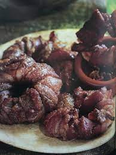

Rings of Hudalla

"The planet Hudalla is an enormous gas giant orbited by some of the largest rings in the galaxy. It's truly impressive to behold - but not nearly as impressive as the sumptuous snack that shares its name. Look, I'm well aware this ain't the first time someone's sliced up an onion, coated it with somethin' delicious, and served it next to a sandwich. But these baked beauties have got somethin' special that sets them apart from the traditional onion ring: They've traded breading for puffer pig bacon! That's right, each and every ring is wrapped in juicy strips of meat for a flavor that's bigger than any gas giant. Even better, the bacon is coated with a mixture of sugar and spice that caramelizes onto the surface of the rings as they cook. The real Hudalla might be a glorious sight, but believe me when I say that these rings are the true wonder."
Ingredients
- 2 large yellow onions, peeled and cut into 1/2-inch-thick discs
- 2 tablespoons hot sauce
- 1 cup packed brown sugar
- 1/2 teaspoon garam masala
- 1 pound sliced bacon
Steps
- Preheat the oven to 400 degrees F. Line a baking sheet with aluminum foil to catch any drips and set a cooling rack on top.
- Divide the sliced onions into sections of two same-size rings sandwiched together, which will give some stability as they bake. Choose the largest rings and work smaller from there. Lightly brush each pair of rings with hot sauce.
- In a small bowl, combine the brown sugar and garam masala, then dip each slice of bacon in the sugar mix.
- Wrap each onion in one or more slices of sugary bacon, making sure the bacon doesn't overlap and covers most of the onion. Place each wrapped ring on the cooling rack over the prepared baking sheet.
- Bake for about 30 minutes, until the bacon is crisp but the rings hold their shape. If you'd like the bacon any crisper, slide the baking sheet under the broiler very briefly. Enjoy while still warm, but be careful - they will be hot from the oven.